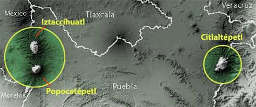

UBICACION


El Popocatépetl esta ubicado en los estados de Morelos, Puebla (45 kilometros) y el Estado de México( a 55 kilometros). Al sur de la Sierra Volcánica Transversal que constituye la espina dorsal del Altiplano Mexicano.
En el Estado de México colinda con los municipios: Tlamanalco, Amecameca, Atlauta y Ecatzingo. Con el estado de Morelos colinda específicamente con el municipio de Tetela del Volcán. Por la parte de Puebla colinda con Huejotzingo, San Salvador el Verde, Domingo Arenas, San Nicolás de los Ranchos y Tochimilco.